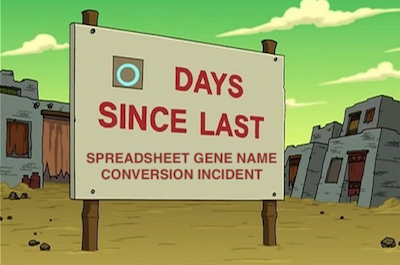

HGNChelper Introduction
Levi Waldron and Markus Riester
2026-05-14
Source:vignettes/index.Rmd
index.RmdWhy HGNChelper?
Physicians and biologists like gene symbols and bioinformaticians hate’em. Why? For one thing, they change constantly and are given new names or aliases. For another, some get munged into dates when imported into spreadsheet programs - and not only Excel (Thank you @karawoo for the picture!):

Myself (Levi speaking), I don’t mind them. It’s way easier to remember TP53 than to remember 7157 or ENSG00000141510. They’re a fact of life. So Markus Riester and I wrote HGNChelper to make them a little more pleasant to bioinformaticians.
HGNChelper functionality
HGNChelper has several functions that seemed useful back in the day when we first wrote it, but really one has withstood the test of time and remained useful:
checkGeneSymbols(x, unmapped.as.na = TRUE, map = NULL, species = "human")checkGeneSymbols identifies HGNC human or MGI mouse gene
symbols which are outdated or may have been mogrified by Excel or other
spreadsheet programs. It returns a data.frame of the same number of rows
as the input, with a second column indicating whether the symbols are
valid and a third column with a corrected gene list.
library(HGNChelper)
#> Please cite our software :)
#>
#> Sehyun Oh et al. HGNChelper: identification and correction of invalid gene symbols for human and mouse. F1000Research 2020, 9:1493. DOI: https://doi.org/10.12688/f1000research.28033.1
#>
#> Type `citation('HGNChelper')` for a BibTeX entry.
human = c("FN1", "tp53", "UNKNOWNGENE","7-Sep", "9/7", "1-Mar", "Oct4", "4-Oct",
"OCT4-PG4", "C19ORF71", "C19orf71")
checkGeneSymbols(human)
#> Maps last updated on: Sat Nov 16 10:35:32 2024
#> Warning in checkGeneSymbols(human): Human gene symbols should be all upper-case
#> except for the 'orf' in open reading frames. The case of some letters was
#> corrected.
#> Warning in checkGeneSymbols(human): x contains non-approved gene symbols
#> x Approved Suggested.Symbol
#> 1 FN1 TRUE FN1
#> 2 tp53 FALSE TP53
#> 3 UNKNOWNGENE FALSE <NA>
#> 4 7-Sep FALSE SEPTIN7
#> 5 9/7 FALSE SEPTIN7
#> 6 1-Mar FALSE MARCHF1 /// MTARC1
#> 7 Oct4 FALSE POU5F1
#> 8 4-Oct FALSE POU5F1
#> 9 OCT4-PG4 FALSE POU5F1P4
#> 10 C19ORF71 FALSE TEKTIP1
#> 11 C19orf71 FALSE TEKTIP1As you see, it even helps fix capitalization. How does it fix those Excel dates? I imported a column of all human gene symbols into Excel, then exported using a whole bunch of available date formats. Then I kept any that differed from the originals for HGNChelper’s map.
Mouse gene symbols
Mouse genes work the same way, but you need to specify the argument
species=mouse:
checkGeneSymbols(c("1-Feb", "Pzp", "A2m", "E430008G22Rik"), species="mouse")
#> Maps last updated on: Sat Nov 16 10:35:32 2024
#> Warning in checkGeneSymbols(c("1-Feb", "Pzp", "A2m", "E430008G22Rik"), species
#> = "mouse"): x contains non-approved gene symbols
#> x Approved Suggested.Symbol
#> 1 1-Feb FALSE Feb1
#> 2 Pzp TRUE Pzp
#> 3 A2m TRUE A2m
#> 4 E430008G22Rik FALSE <NA>Mouse gene symbols containing any capital letter, except the first
character, can not be fixed. For example, ‘E430008G22Rik’ is a symbol
for Abl1
gene, but we couldn’t fix it. Suggestions
welcome about how to build a more complete map of valid symbols. To
be on the safe side, you could set unmapped.as.na = FALSE
to keep unrecognized symbols as-is and only correct ones that have a
definitive correction.
What exactly checkGeneSymbols does
HGNChelper does the following corrections:
- fix capitalization. For human, only orf genes are
allowed to have lower-case letters.
- fix Excel-mogrified symbols
- fix symbols that are listed as aliases to a more recent symbol in the HGNC or MGI (MGI_EntrezGene_rpt) database.
Numbers 2 and 3 are done by comparing to a complete map of both valid and invalid but mappable symbols, shipped with HGNChelper:
These are a combination of manually generated Excel mogrifications that remain constant, and aliases that can become out of date with time.
Updating maps of aliased gene symbols
Gene symbols are aliased much more frequently than I can update this package, like every day. We intentionally avoid automatic update of the map to maintain reproducibility, because the same code from the same version of HGNChelper could produce different results at any time with automatic map update. If you want the most current maps of aliases, you can either:
- use the
getCurrentHumanMap()orgetCurrentMouseMap()function, and provide the returned result through themap=argument ofcheckGeneSymbols(), or - See the instructions for updating your package locally at https://github.com/waldronlab/HGNChelper (it’s just one command-line command as long as you have R and roxygen2 installed)
What does the expand.ambiguous argument do
As mentioned above genes symbols are aliased very frequently. It is possible that a gene symbol which was earlier an alias is now an approved symbol. ‘checkGeneSymbols()’ by default will give out only the approved symbol of a gene. This can be an issue specifically when analyzing an older dataset which may be referencing to a previously aliased (now approved) gene symbol mapping to another approved symbol at that time. This can be checked with ‘expand.ambiguous = TRUE’ which gives out all the mapping of a gene symbol irrespective of whether it’s an approved symbol.
checkGeneSymbols("AAVS1", expand.ambiguous = FALSE)
#> Maps last updated on: Sat Nov 16 10:35:32 2024
#> x Approved Suggested.Symbol
#> 1 AAVS1 TRUE AAVS1
checkGeneSymbols("AAVS1", expand.ambiguous = TRUE)
#> Maps last updated on: Sat Nov 16 10:35:32 2024
#> x Approved Suggested.Symbol
#> 1 AAVS1 TRUE AAVS1 /// PPP1R12C
checkGeneSymbols(c("Cpamd8", "Mug2"), species = "mouse", expand.ambiguous = FALSE)
#> Maps last updated on: Sat Nov 16 10:35:32 2024
#> x Approved Suggested.Symbol
#> 1 Cpamd8 TRUE Cpamd8
#> 2 Mug2 TRUE Mug2
checkGeneSymbols(c("Cpamd8", "Mug2"), species = "mouse", expand.ambiguous = TRUE)
#> Maps last updated on: Sat Nov 16 10:35:32 2024
#> x Approved Suggested.Symbol
#> 1 Cpamd8 TRUE Cpamd8 /// Mug2
#> 2 Mug2 TRUE Mug2 /// Cpamd8Where do I find HGNChelper?
- CRAN: https://cran.r-project.org/package=HGNChelper
- GitHub: https://github.com/waldronlab/HGNChelper
Please report any issues at https://github.com/waldronlab/HGNChelper/issues